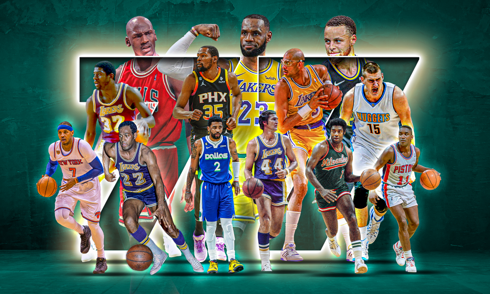

Descubra a história da melhor liga do mundo
A NBA tem uma história rica e cheia de momentos icônicos que moldaram o basquete moderno. Desde sua fundação até os dias de hoje, a liga tem sido palco de lendas que transformaram o esporte e encantaram fãs ao redor do mundo.
Explore as origens da NBA, os primeiros campeonatos, a evolução das regras e como a liga se tornou um fenômeno global. Cada década trouxe mudanças e novos heróis, deixando um legado que permanece vivo até hoje.
Além das grandes finais e vitórias históricas, a NBA também é marcada por sua contribuição para o desenvolvimento cultural e social. Descubra como a liga ajudou a mudar a forma como vemos o esporte e o impacto que ela teve fora das quadras.
